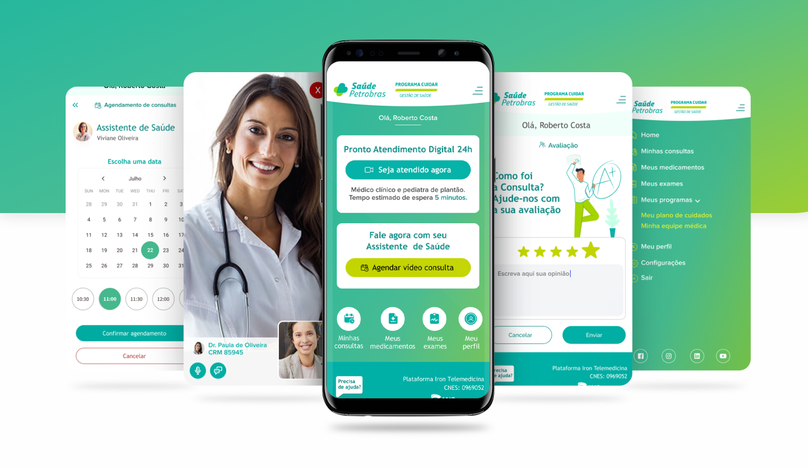
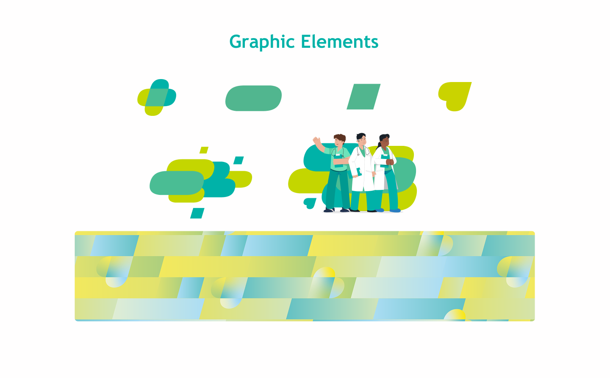
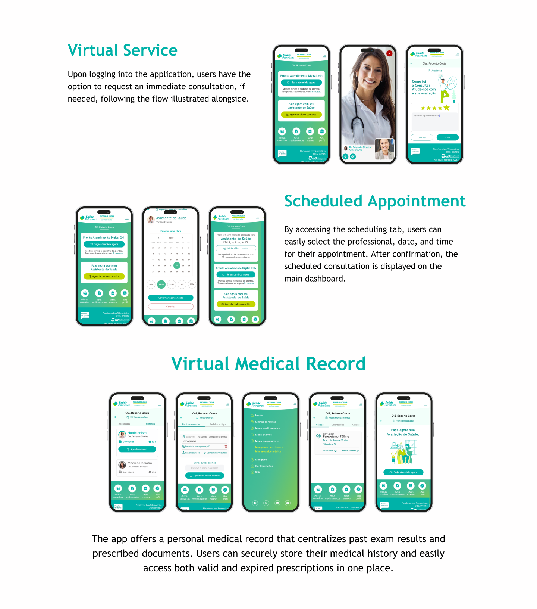
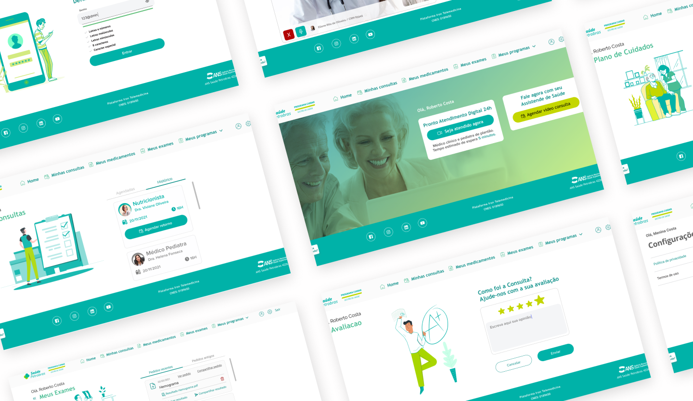

00/Loading
Rio de Janeiro
Fonseca
Product designer
Strategy · systems · experience
Healthcare / Corporate
Petrobras Saúde is the corporate healthcare plan for Petrobras employees and their families, serving hundreds of thousands of beneficiaries across Brazil. The platform redesign focused on modernizing the digital experience, delivered during COVID-19 with user research, beneficiary needs, and provider search at the center.

Saúde Petrobras is a telemedicine system designed to support the health needs of Petrobras employees and dependents during the COVID-19 era. The platform was created to provide remote medical consultation, symptom tracking, and health guidance at a time when in-person healthcare access was limited and safety concerns were paramount.
This project combined UX research, digital health workflows, and service design to deliver a trusted and accessible telehealth experience for a large institutional user base.

Existing health systems were often fragmented, intimidating, or unfriendly to users unfamiliar with remote care platforms.
Institutional goals also included improved health outcomes and reduced clinic overload.
Key Components
The user experience was intentionally simple so that even first-time telemedicine users could navigate without confusion. The interface focused on clear language, progressive disclosure, and trust signals (doctor availability, session confirmations, and secure UI cues).



Research revealed that users wanted:
These insights shaped the product’s simplicity and clarity focus.
Special care was taken to reduce stress in moments of health concern through predictable structure, clear feedback, and reassuring visual cues.
The platform helped position telemedicine as a trusted option within a historically in-person healthcare system.